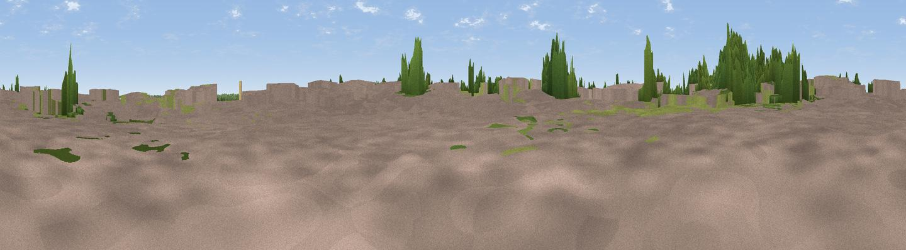

Viewpoint near Messingham
#41152 in England · top 83% of its area beats it · near MessinghamThe view, rendered

A 360° render of this exact spot computed from the terrain model, tree cover and land cover — summer colours, afternoon light, calibrated against photographs of famous viewpoints. Real trees, hedges and buildings will differ in detail.
The panorama
Grey silhouette: terrain skyline in each direction (720 bearings, Earth curvature and refraction included). Dashed green: skyline with trees (+15 m) and buildings (+8 m) as obstacles. Blue strip: how far the ground is visible on each bearing.
Where the view opens
Wedge length = distance to the farthest visible ground on that bearing (vegetation-aware). Rings at 10, 25 and 50 km.
What fills the view
34% built-up · 31% cropland · 23% grassland · 12% woodland
Angular shares of the visible panorama (visual magnitude), not map area. Landscape diversity 0.58 (0–1 Shannon).
Key numbers
More beautiful places nearby
The staircase of upgrades: each row has a higher view potential than everything closer. Driving times are estimates from straight-line distance, calibrated against real road routing — check an actual route before setting out.
| Place | Direction | Drive | Score |
|---|---|---|---|
| Viewpoint near Messingham | E · 2 km | ~6 min | 31.5 |
| Viewpoint near Scawby | E · 5 km | ~11 min | 34.6 |
| Viewpoint near Scunthorpe | N · 5 km | ~11 min | 35.6 |
| Ash Holt | SE · 6 km | ~12 min | 47.3 |
| Viewpoint near Grayingham | SSE · 9 km | ~17 min | 50.9 |
| Viewpoint near Burton upon Stather | N · 13 km | ~24 min | 57.2 |
| Viewpoint near Burton Stather | N · 15 km | ~27 min | 62.4 |
| Beacon Hill | SW · 21 km | ~35 min | 65.7 |
53.53065, -0.65091 · source: osm peak · position refined by local search. Computed location — check access rights before visiting.